Photos
up 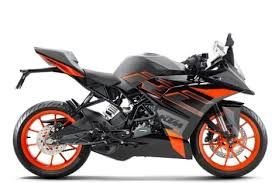
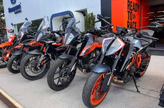
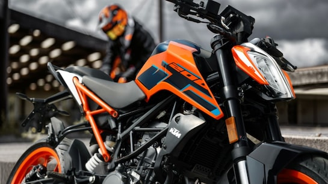
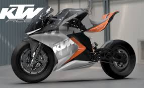
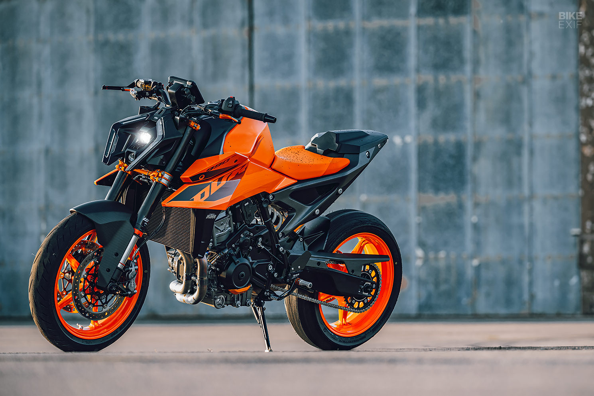
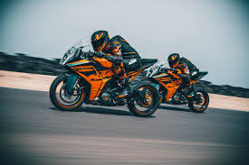
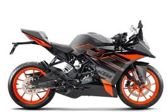
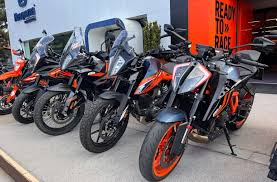
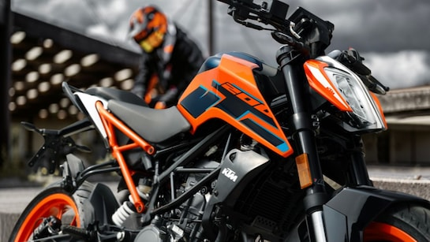
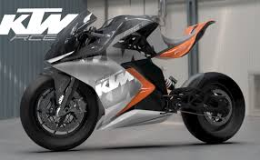
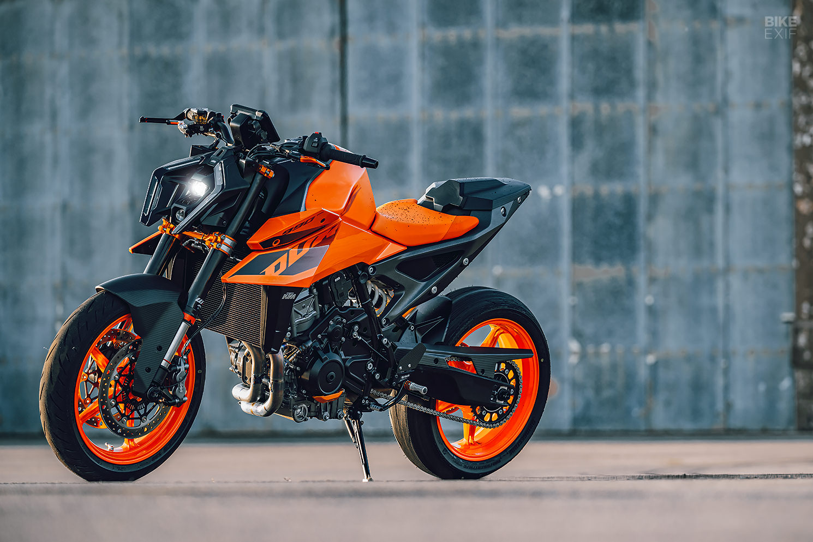
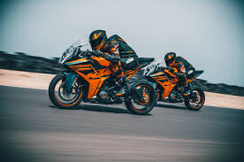
KTM AG is a globally renowned Austrian motorcycle and sports car manufacturer, known for its high-performance motorcycles that dominate both off-road and on-road segments. The brand, which stands for "Kronreif Trunkenpolz Mattighofen," has evolved from a small metalworking shop to a leader in motorcycle innovation. KTM is particularly recognized for its off-road bikes, adventure motorcycles, and high-performance street bikes. The company’s commitment to innovation, durability, and performance has made it one of the most respected names in the motorcycling world.
KTMs journey dates back to 1934 when Hans Trunkenpolz established a metalworking and repair shop in Mattighofen, Austria. During World War II, the company repaired diesel engines and focused on machining work. In 1953, KTM introduced its first motorcycle, the R100, marking the beginning of its legendary motorcycle production. Over the decades, KTM has faced financial difficulties, ownership changes, and rebranding, but its core philosophy of producing high-performance motorcycles remained unchanged.
By the 1990s, KTM had firmly established itself in the off-road motorcycling segment, gaining a reputation for manufacturing durable and powerful dirt bikes. The introduction of the KTM Duke series in 1994 revolutionized street motorcycling, providing an aggressive, lightweight, and performance-oriented alternative for street riders. The early 2000s saw KTM expand its lineup to include sportbikes, adventure motorcycles, and electric models, reinforcing its position as an industry leader.
KTM is known for its commitment to research and development, ensuring that its motorcycles are always at the cutting edge of technology. Some of the key innovations that define KTM’s motorcycles include: Lightweight Chassis: KTMs signature lightweight, high-strength steel and aluminum chassis contribute to its bikes’ agility and performance. Race-Ready Suspension: The company partners with WP Suspension to offer superior handling, making KTM bikes a favorite among off-road racers. Advanced Engine Technology: KTM's single-cylinder and twin-cylinder engines are known for their efficiency, power, and durability. Ready to Race Philosophy: Unlike many manufacturers, KTM builds motorcycles that are race-ready straight from the factory, requiring minimal modifications for competitive racing. Innovative Electronics: KTM integrates cutting-edge technology, such as traction control, ride modes, quick-shifters, and TFT displays, ensuring a balance between performance and rider safety.
KTM has an illustrious history in motorsports, particularly in motocross, enduro, and rally racing. The company has won multiple Dakar Rally titles, proving its bikes' ruggedness and endurance. KTM also competes in MotoGP with the KTM RC16, showcasing its engineering prowess at the highest level of road racing.
KTM motorcycles are renowned for their high-performance engineering, aggressive design, and race-ready capabilities. Featuring lightweight trellis frames for superior agility, powerful single-cylinder and twin-cylinder engines for optimal power delivery, and advanced suspension systems by WP, KTM bikes offer an unmatched riding experience. The brand integrates cutting-edge technology such as ride-by-wire throttle, multiple riding modes, traction control, and quick-shifters to enhance performance and safety. With an aggressive and aerodynamic design, KTM motorcycles stand out on both the street and the track. Whether it’s the nimble Duke series, the fully-faired RC models, or the adventure-ready 390 and 1290 Super Adventure, KTM ensures every ride is thrilling and dynamic. Emphasizing its "Ready to Race" philosophy, KTM continues to push the boundaries of innovation in motorcycling.
One of the standout features of KTM motorcycles is their lightweight chassis design. The brand employs high-strength steel trellis frames that provide excellent rigidity while keeping the overall weight low. This results in superior handling, making KTM bikes highly maneuverable on both city streets and racetracks. The well-balanced chassis also ensures enhanced stability at high speeds, providing riders with confidence and control during aggressive riding.
KTM engines are engineered for performance, offering a perfect blend of power, efficiency, and durability. Equipped with liquid-cooled, fuel-injected single-cylinder and twin-cylinder engines, KTM bikes deliver exceptional torque and high-revving power output. The advanced cooling system prevents overheating, ensuring consistent performance even in extreme conditions. KTM's commitment to performance is further reflected in their high-compression engines, which provide thrilling acceleration and top speeds.
KTM integrates state-of-the-art electronics to enhance the riding experience and ensure rider safety. Features such as traction control, multiple riding modes, ABS, and quick-shifters make KTM motorcycles technologically advanced and easy to control. The latest models also come with TFT instrument displays, offering a modern interface with real-time data, navigation, and smartphone connectivity for seamless riding convenience.
KTM motorcycles are equipped with race-derived suspension systems, making them ideal for aggressive riding and off-road adventures. Partnering with WP Suspension, KTM ensures that its bikes feature fully adjustable front and rear suspensions, offering excellent damping and shock absorption. Whether it's the upside-down forks on sportbikes or the long-travel suspension on adventure models, KTM ensures superior ride quality across all terrains.
The braking system in KTM motorcycles is designed for precision and safety. Most KTM models come with high-performance disc brakes featuring radial calipers for improved stopping power. Advanced ABS (Anti-lock Braking System) is standard across many models, ensuring enhanced safety during sudden braking or slippery conditions. The inclusion of Supermoto ABS in select models allows riders to have better control while performing aggressive maneuvers.
KTM’s unique design language sets it apart from other motorcycles on the road. With aggressive styling, sharp bodywork, and bold color schemes, KTM bikes have a distinctive look that reflects their performance DNA. The brand’s signature orange color, exposed trellis frame, and minimalistic yet aerodynamic design contribute to its unmistakable identity. KTM motorcycles are built not only for speed but also for style, making them a popular choice among young and passionate riders.
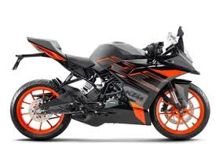
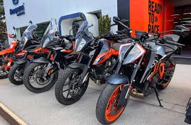
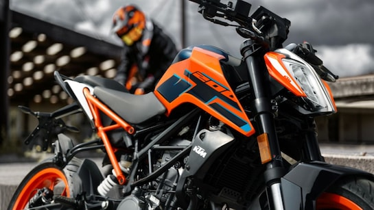
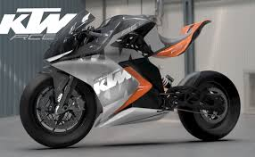
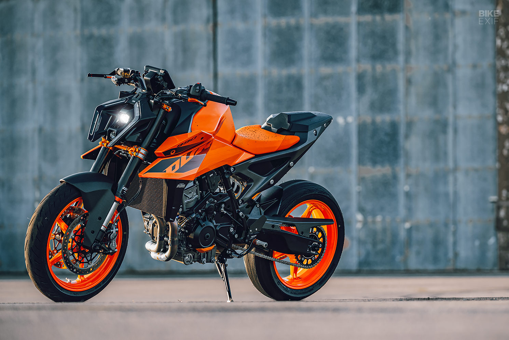
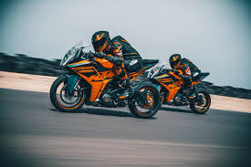
Contact Information:
Phone: +43 (0) 7742 6000
Fax: +43 (0) 7742 6000-303
Email: info@ktm.com
Website: www.ktm.com
Global Presence: KTM has a strong global network, with manufacturing facilities in Austria and India. It operates through various dealerships and subsidiaries worldwide, including in Europe, North America, Asia, and South America. In India, KTM has partnered with Bajaj Auto to manufacture and distribute its motorcycles, with a major production facility located in Pune.
R&D and Manufacturing: KTMs research and development facilities are located in Austria, focusing on cutting-edge motorcycle technology and innovation. The company also collaborates with partners like WP Suspension and Akrapovič to enhance the performance and quality of its motorcycles. With a strong focus on performance and engineering, KTM continues to push boundaries in the motorcycle industry.